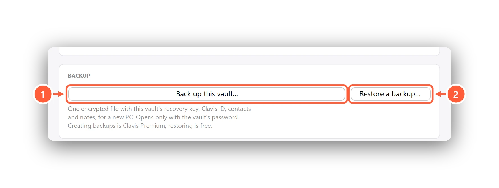
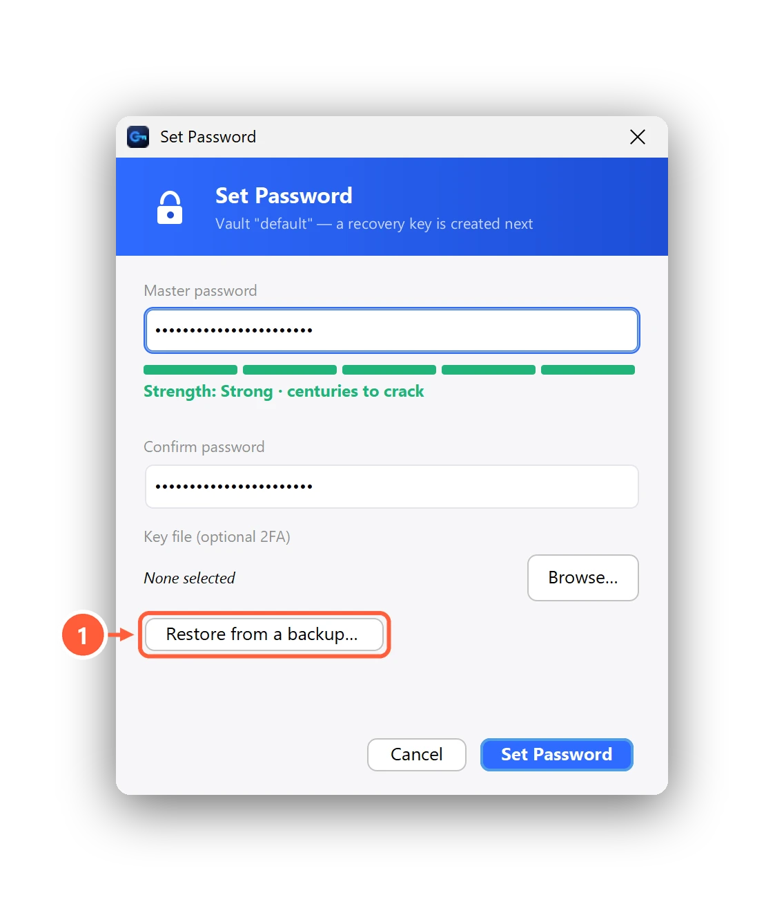

How to move encrypted files to a new PC without losing access
Moving to a new computer is when encryption goes wrong. Not because anything breaks — because people copy the encrypted files and forget the one thing that opens them. Here's a checklist that works for any encryption tool, then the two-minute version for Clavis.
The checklist
- Know what opens your files. A password? A key file? A recovery key? A vault or key store on the old PC's disk? Encrypted files on their own are useless without it.
- Copy the encrypted files — all of them, including ones in cloud or USB folders.
- Move the keys separately and securely: never on the same unencrypted USB stick as everything else.
- Test on the new PC before wiping the old one. Open a few files of each kind.
- Then wipe or reset the old PC.
With Clavis: one backup file
Clavis keeps everything a vault needs — its recovery key, your Clavis ID, contacts and secure notes — in a single encrypted
vault backup (.clavisbackup). It opens only with the vault's password.

- On the old PC: Settings → Backup → Back up this vault… (Clavis Premium).
- Copy the backup file and your
.encfiles to the new PC (or keep them in your cloud folder). - Install Clavis on the new PC. On the very first screen, choose Restore from a backup… — restoring is free.
- Unlock with your usual password, open a few files, and you're done.

No backup? Your password plus your files is enough if you use the same vault password — but your notes, contacts and Clavis ID stay behind. Step-by-step: Back up your vault and restore it on a new PC.